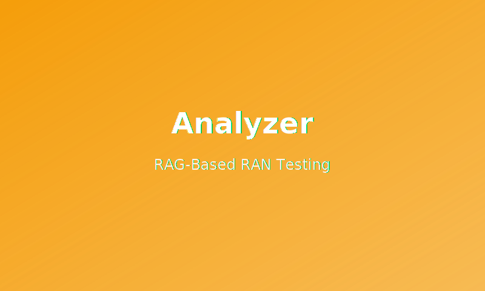

Analyzer
RAG-Based RAN Testing Tool
Intelligent analysis tool for RAN testing using LLMs and semantic search. Processes network logs and provides context-aware insights with retrieval-augmented generation.
Real-time analysis • Dockerized deployment
View Code →